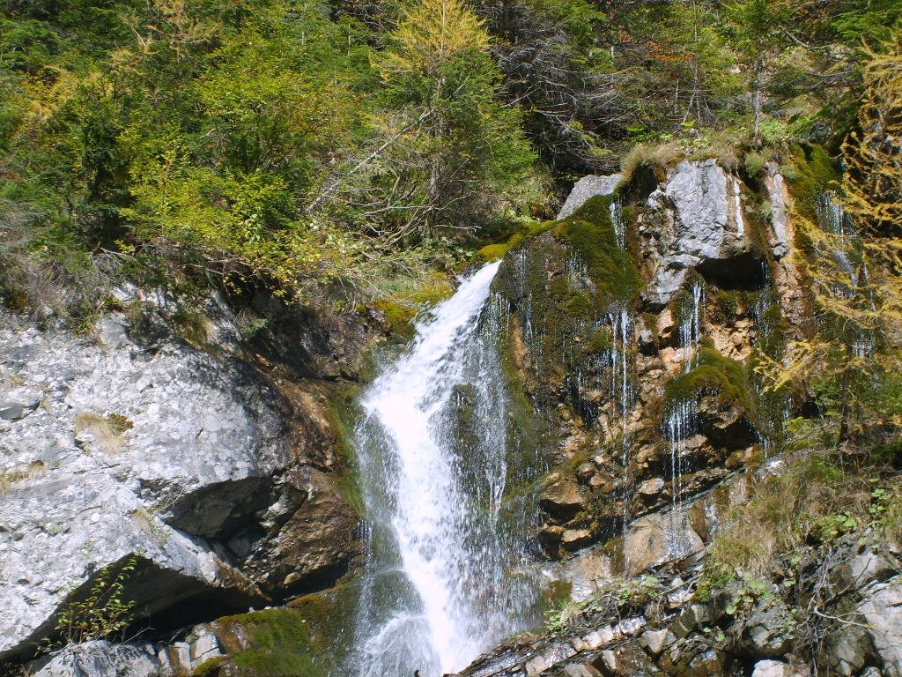
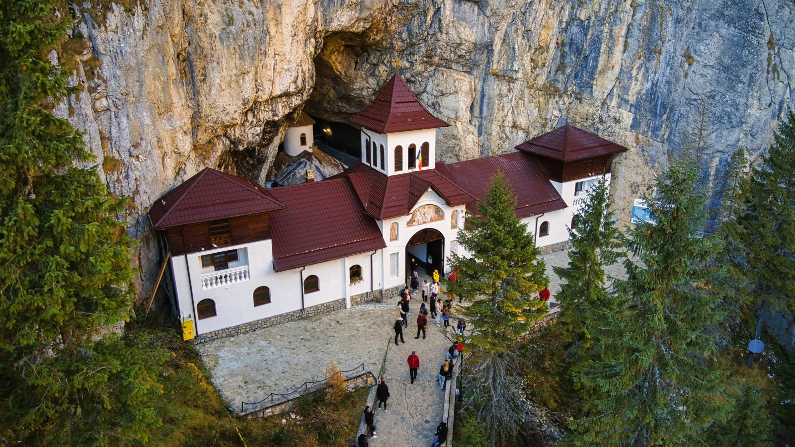

Casa Rodica
Refugiul verde al Brezei
O vilă întreagă pe un hectar de livadă, cu piscină, foișor și trei zone de divertisment. Până la 20 de oaspeți.
Descoperă Casa RodicaBreaza este o poartă liniștită spre Bucegi: aer curat de stațiune climaterică, poteci pentru toate nivelurile și priveliști de creastă, la mai puțin de o oră de mașină.

La circa 450 de metri altitudine, în Subcarpații Prahovei, Breaza îmbină aerul curat de stațiune climaterică cu accesul rapid spre unul dintre cele mai spectaculoase masive din Carpați. De aici pornești dimineața spre creste și te întorci seara într-o casă caldă din Breaza.
Spre deosebire de stațiunile aglomerate de pe Valea Prahovei, Breaza îți oferă liniște și spațiu ca punct de plecare. Ești suficient de aproape de munte cât să faci drumeții de o zi, dar destul de departe de forfotă cât să te odihnești cu adevărat.
Cel mai comod acces spre platoul Bucegi este prin Sinaia sau Bușteni, la aproximativ 30–40 km de Breaza. De acolo, telecabina te urcă rapid la altitudine, iar de sus pornesc majoritatea traseelor clasice.
Platoul Bucegi găzduiește cele mai cunoscute formațiuni naturale ale masivului — Sfinxul și Babele — accesibile relativ ușor odată ce ai urcat cu telecabina, potrivite și pentru familii bine echipate.
Pentru drumeții mai serioase, Vârful Omu (2.507 m), cel mai înalt punct al Bucegilor, oferă un traseu de creastă de o zi întreagă, cu diferențe de nivel consistente. Aproape de Bușteni merită văzute și Cascada Urlătoarea, pe un traseu scurt și accesibil, precum și Crucea Caraiman, reperul vizibil de pe vale.
Iubitorii de locuri liniștite pot coborî spre Peștera Ialomiței și mănăstirea din apropiere, într-o zonă mai puțin circulată a masivului.

O zi tipică începe cu un mic dejun pe terasă și un drum scurt până în Sinaia sau Bușteni. Urci cu telecabina, alegi un traseu în funcție de vreme și de nivelul grupului, iar la prânz te oprești la o cabană de pe platou.
După-amiaza cobori spre vale și te întorci la Breaza — unde te așteaptă o cină caldă și o seară de odihnă, departe de aglomerație.
Bucegii au ceva pentru fiecare nivel. Familiile cu copii pot rămâne pe platou, în zona Babele–Sfinx, unde potecile sunt line și distanțele scurte, ori pot alege traseul spre Cascada Urlătoarea de lângă Bușteni, accesibil și plăcut.
Drumeții experimentați pot ținti Vârful Omu pe crestele înalte, sau pot combina mai multe obiective într-o tură lungă de o zi. Diferențele de nivel sunt însemnate, așa că o condiție fizică bună și un start matinal sunt esențiale.
Primăvara târziu și vara aduc pajiști înflorite și vizibilitate excelentă spre creste. Toamna colorează pădurile de la poalele masivului, iar aerul limpede oferă panorame spectaculoase. Iarna, platoul devine un peisaj alpin — frumos, dar rezervat celor bine echipați.
Indiferent de sezon, vremea la altitudine se poate schimba brusc; verifică mereu prognoza înainte de a urca.

De regulă câteva minute până pe platou, în funcție de instalație și de coadă. În weekendurile aglomerate, mergi dimineața devreme pentru a evita așteptarea.
Da — zona Babele–Sfinx de pe platou și traseul spre Cascada Urlătoarea sunt accesibile familiilor cu copii, cu distanțe scurte și diferențe mici de nivel.
Încălțăminte de trekking, straturi de îmbrăcăminte, pelerină de ploaie, apă și gustări. Pentru trasee lungi, adaugă o hartă și verifică prognoza.
Cazare în Breaza
O vilă întreagă pe un hectar de livadă, cu piscină, foișor și trei zone de divertisment. Până la 20 de oaspeți.
Descoperă Casa RodicaCasa de poveste cu mansardă „Hobbit", living de 100 mp și ceaun pentru 30. Până la 20 de oaspeți.
Descoperă Casa Alinka